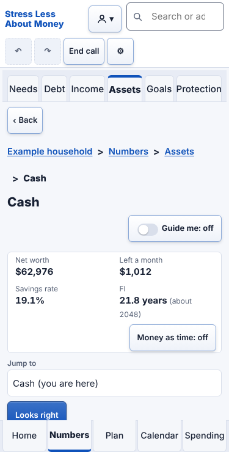
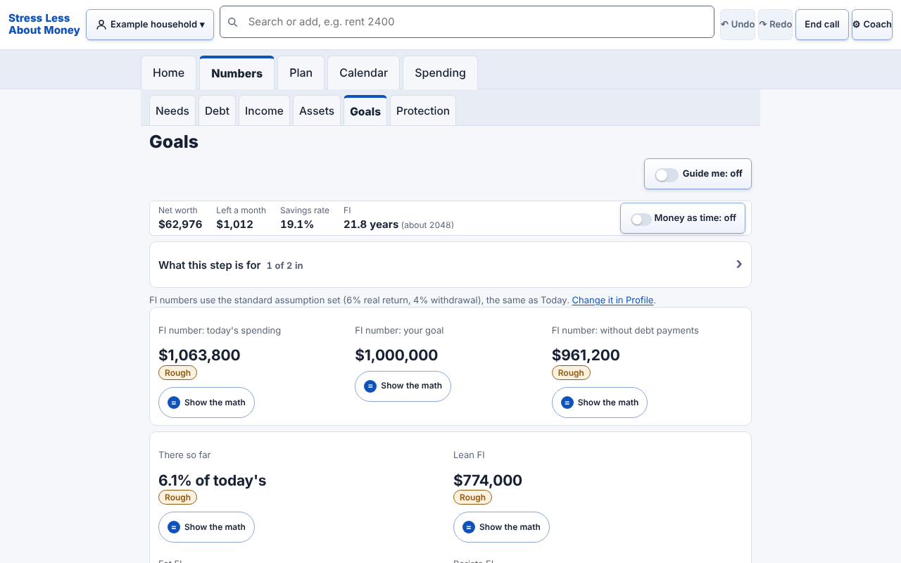
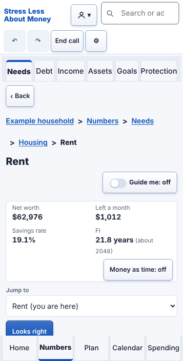
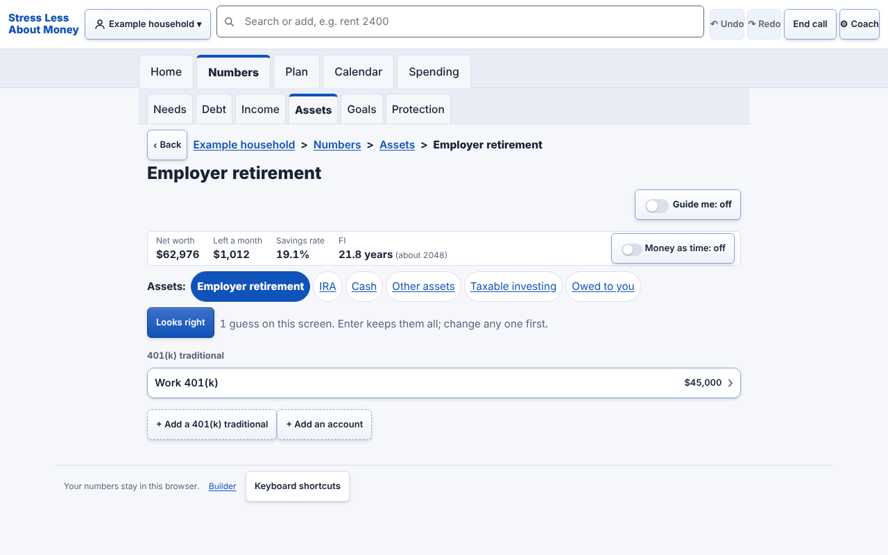
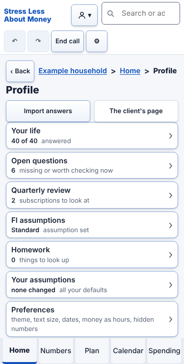
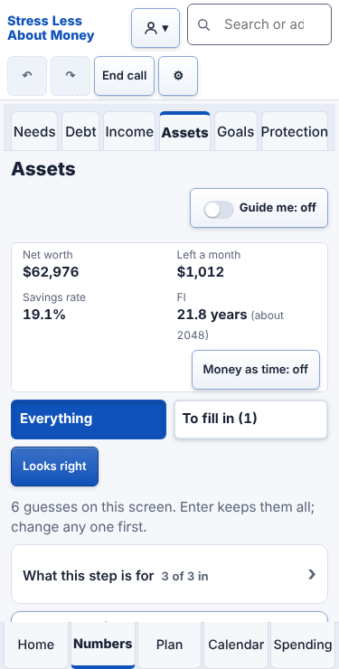

Six screens of SLAM, chosen at random (at least two from the deep levels, where the real work happens), blurred so the words cannot be read closely. Made on 2026-10-28 with seed 10045 (run node tools/squint-kit.mjs --seed 10045 to get the same six). The made-up demo household.
How to run it (two minutes a person)
Print this page (or hand over the screen) and give a friend a pen.
On each screen, ask them to circle six things: the site ID, the page name, the main sections, the options at this level, where "you are here" is marked, and search.
Two minutes for all six screens. No zooming in, no reading closely: a squint is the point.
Count the circles that landed. The answer key on the last page says what is where. Anything missed on two screens or more is a fail for the Phase 3 gate (BOARD.md).

Screen 1 (phone)

Screen 2 (computer)

Screen 3 (phone)

Screen 4 (computer)

Screen 5 (phone)

Screen 6 (phone)
Answer key (for the coach, after the two minutes)
Screen 1: Numbers > Assets > Cash (level 3, phone width). Site ID top left; page name as the heading under the tabs (and the last, bold step of the trail below level 2); sections as the five tabs (bottom on a phone, top on a computer); options as the second-level tabs, the siblings row or the rows; you are here as the filled, bold tab and second-level tab; search as the box in the header.
Screen 2: Numbers > Goals (level 2, computer width). Site ID top left; page name as the heading under the tabs (and the last, bold step of the trail below level 2); sections as the five tabs (bottom on a phone, top on a computer); options as the second-level tabs, the siblings row or the rows; you are here as the filled, bold tab and second-level tab; search as the box in the header.
Screen 3: Numbers > Needs > Housing > Rent (level 4, phone width). Site ID top left; page name as the heading under the tabs (and the last, bold step of the trail below level 2); sections as the five tabs (bottom on a phone, top on a computer); options as the second-level tabs, the siblings row or the rows; you are here as the filled, bold tab and second-level tab; search as the box in the header.
Screen 4: Numbers > Assets > Employer retirement (level 3, computer width). Site ID top left; page name as the heading under the tabs (and the last, bold step of the trail below level 2); sections as the five tabs (bottom on a phone, top on a computer); options as the second-level tabs, the siblings row or the rows; you are here as the filled, bold tab and second-level tab; search as the box in the header.
Screen 5: Profile (level 1, phone width). Site ID top left; page name as the heading under the tabs (and the last, bold step of the trail below level 2); sections as the five tabs (bottom on a phone, top on a computer); options as the second-level tabs, the siblings row or the rows; you are here as the filled, bold tab and second-level tab; search as the box in the header.
Screen 6: Numbers > Assets (level 2, phone width). Site ID top left; page name as the heading under the tabs (and the last, bold step of the trail below level 2); sections as the five tabs (bottom on a phone, top on a computer); options as the second-level tabs, the siblings row or the rows; you are here as the filled, bold tab and second-level tab; search as the box in the header.